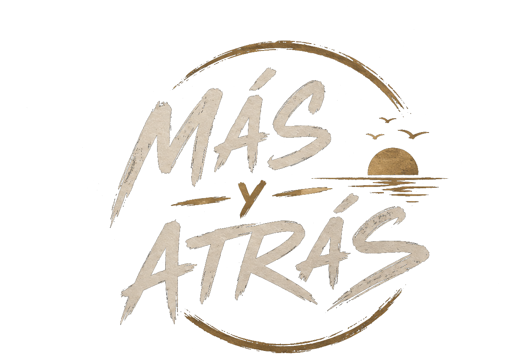
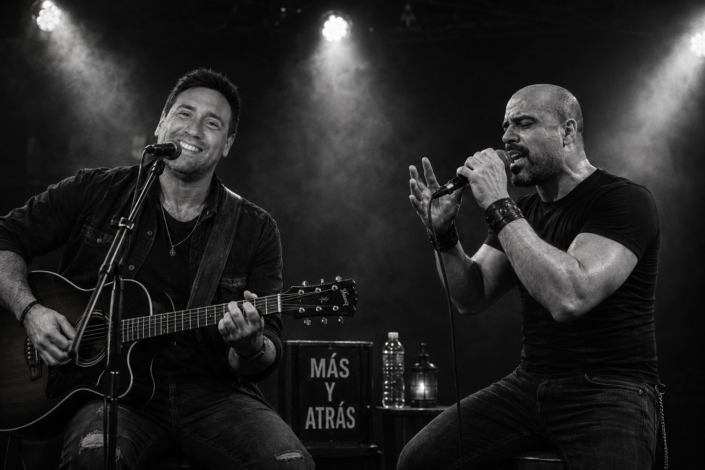
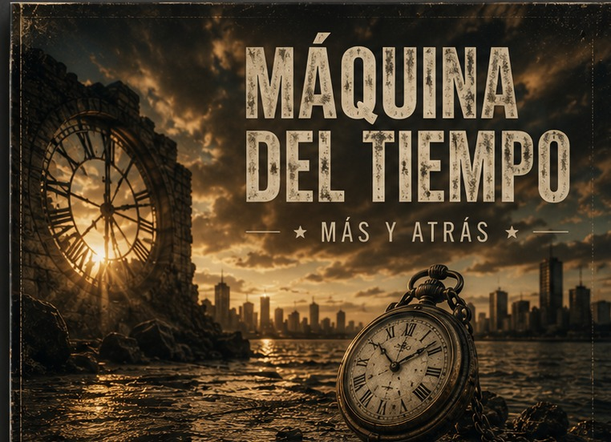
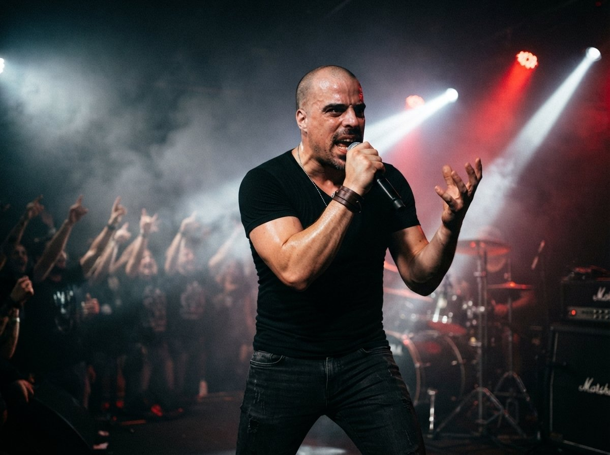
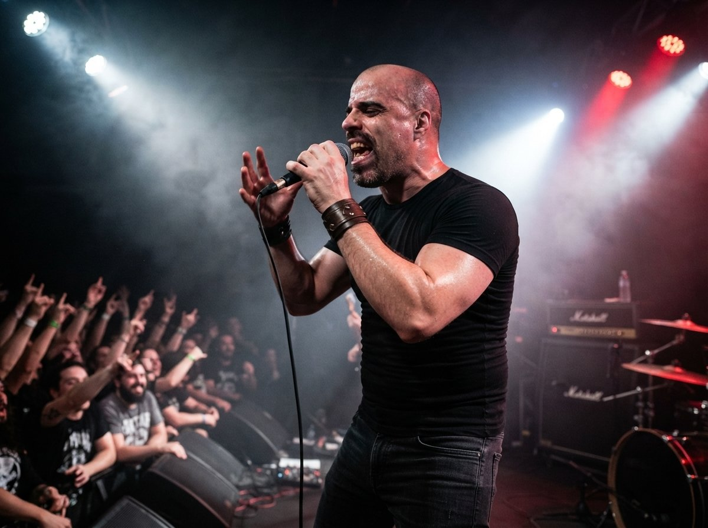

Fechas y contacto
Todo empezó hace diez años, en 2016. Santiago Silberstein y Germán Farías se conocieron en el Club GEBA, pero no tocando la guitarra: él trabajaba como instructor de musculación y Santiago como guardavidas. Entre turno y turno, en esos ratos muertos que deja un club de día completo, empezó una charla que terminó siendo mucho más que la típica cortesía entre compañeros de trabajo: descubrieron que a los dos les gustaba la música, y de ahí a juntarse con las guitarras hubo un solo paso.
Santiago ya venía de un camino musical propio: había sido músico y estado en bandas, hasta que encontró su voz como solista y compositor bajo el nombre "Paradise Choll". En esa época escribió muchas canciones para sus amigos, y algunas de ellas, con los años, terminaron encontrando su lugar en el repertorio de Más y Atrás.
Al principio no había plan ni nombre: se juntaban simplemente a tocar covers, dos guitarras y un cancionero prestado, sin pensar todavía en formar una banda. Pero la costumbre de encontrarse a tocar fue abriendo la puerta a algo propio, y en algún momento los covers empezaron a quedarse cortos. Entre ensayo y ensayo aparecieron las primeras canciones que eran solo de ellos.
Ensayaron donde pudieron. Primero en una casa, después en una sala de ensayo compartida con otros colaboradores que fueron sumándose y restándose con los años. Hubo una época en la que ni siquiera eso alcanzaba: los vecinos se quejaban del volumen a cualquier hora, y la solución de emergencia terminó siendo meterse a practicar adentro de un baño, el único rincón con paredes lo bastante gruesas como para amortiguar un poco el ruido. De cada uno de esos lugares quedó algo: una canción, un arreglo, una anécdota para contar arriba del escenario.
"No importa si es enchufado o acústico: la esencia es la misma. Sólo cambia el camino."
Esa frase, misma esencia y distinto camino, es la que persiguieron en Musilencio (Acústico), la contracara íntima de Ruido Interior (En Vivo), grabado con el público al frente y la sangre caliente. Diez años después de aquel primer cruce en el Club GEBA, Santiago y Germán siguen siendo los mismos dos de siempre, ahora con discos propios y un nombre que resume todo lo que aprendieron en el camino: se avanza, se vuelve, y siempre se sigue tocando.
"Ruido Interior" es lo que queda sonando después de un show, esa energía que se llevan puertas adentro cuando termina la noche. Por eso lo grabaron en vivo y no en estudio: querían que quedara el ruido real de la gente, no una versión prolija de las canciones.
"Te Necesito" nació de una amistad: hace años, un amigo le compartió a Santiago la idea que sería el corazón de la letra, y entre los dos la convirtieron en canción. Quedó grabada y guardada por mucho tiempo, hasta que Santiago sintió que merecía volver a existir: no como una versión nueva, sino como esa misma canción de siempre, llevada por fin al lugar donde siempre quisieron que estuviera.
Caía en tus redes y en tus garras, te perseguía, me poseías, me dominabas. Pero eso quedó atrás, hoy me dices que me extrañas y yo te digo, nena, que para mí estás muerta. ¿Te necesito? ¡No! Te tengo en el olvido, amor, y estás ahí queriendo volver a entrar en mí. ¿Te necesito? ¡No! Te tengo en el olvido, amor, y estás ahí queriendo volver a entrar en mí. Solías ser la dueña de esta calesita, yo te compraba dulces mientras robabas sortijas. El circo ha cerrado, se cayeron tus trapecistas, y ya no te queda otra que pagar todas tus vueltitas. ¿Te necesito? ¡No! Te tengo en el olvido, amor, y estás ahí queriendo volver a entrar en mí. ¿Te necesito? ¡No! Te tengo en el olvido, amor, y estás ahí queriendo volver a entrar en mí.
⬇ Descargar letra completaEn programación, el "kernel" es el núcleo del sistema: el corazón del que depende todo lo demás, el foco alrededor del cual gira todo. Santiago tomó esa idea de la época en que estudiaba programación, allá por 2010, y la usó como metáfora: una compañera de esos años se había convertido en su foco, en el corazón de esa etapa, con la atracción que le generaba terminando convertida en canción.
I can't start si vos no estás... No logro ver aquella luz en tu mirada. De nada sirve que te escondas, because I see you aquí. Te volvés a poner tu camisón, de animal print que no es de seda. Te queda... realmente bien. I try to understand... Ooh, Kernel, guíame... Hoy y ayer, ámame. Ooh, Kernel, guíame... Hoy y ayer, ámame. Porque without you, no sé quién soy... Quizás mañana... seré tu boy. Boy, boy... ¡Boy! Why es tan difícil entenderte... Quisiera que estuviésemos en el mismo channel, en el que pudiésemos ser amantes... There is another... Ooh, Kernel, guíame... Hoy y ayer, ámame. Ooh, Kernel, guíame... Hoy y ayer, ámame. Porque without you, no sé quién soy... Quizás mañana... seré tu boy. Boy, boy... ¡Boy!
⬇ Descargar letra completa"La Apuesta" mezcla dos cosas de una misma época de Santiago: el gusto ocasional por el casino (nunca a nivel enfermizo) y la sensación de apostarlo todo en una relación, esa forma de irte perdiendo a vos mismo por querer que algo funcione.
Dejo de pensar y entro en un soplo lento de ilógicas ideas. Vuelvo a anotar cada frase que me digas y esté mal, que no encuentres una salida. Me importa muy poco tu presencia, tu bipolaridad. No estoy hecho de secuelas que me inviten a recordar, esta historia llegó a su final. Lejos de este acá, cerca de tus besos me dejás, sin las ganas de esperar. No me extrañes si el hoy se fue, mañana volverás o no lo sé. Tengo la tranquilidad que en este juego no me quedan fichas por jugar. No me quedan fichas por jugar, no me quedan fichas por jugar, no me quedan fichas por jugar, no me quedan fichas por jugar. Esta historia llegó a su final.
⬇ Descargar letra completa"Máquina del Tiempo" surge de un libro que Santiago leyó y le encantó: el clásico de H.G. Wells. A eso se suma esa fantasía que alimentan tantas películas, de imaginar qué habría cambiado, qué cambiarías hoy y qué no.
Qué tal si te digo que he creado una ilusión... Que no sé... si quiero ver... Parece que a veces... el dinero vale más que el tiempo... Pero es cierto que... es lo único que no se recupera... Sin embargo yo seguiré... en la espera de mi... Máquina del tiempo... llévame... hacia atrás... Máquina del tiempo... llévame... más allá... Máquina del tiempo... llévame... hacia atrás... Máquina del tiempo... llévame... más allá... Has inventado un mundo... donde el sufrimiento es goce... Y es triste saber... que al final... eso ya no sirve... Quizás no tengas claro... qué deseás... y apuntás... al objetivo equivocado... Será que la luz... me ha cegado... Será que la vida me ha dejado... sin mí... Máquina del tiempo... llévame... hacia atrás... Máquina del tiempo... llévame... más allá... Máquina del tiempo... llévame... hacia atrás... Máquina del tiempo... llévame... más allá... Máquina del tiempo... llévame... hacia atrás... Máquina del tiempo... llévame... más allá... Máquina del tiempo... llévame... hacia atrás... Máquina del tiempo... llévame... más allá... Máquina del tiempo... hacia atrás... Máquina del tiempo... más allá... Hacia atrás... más allá... Máquina del tiempo... Hacia atrás... más allá... Máquina del tiempo... máquina del tiempo... Hacia atrás... más allá...
⬇ Descargar letra completaNace de un amor no muy correspondido hacia una persona muy especial, tal como lo cuenta la letra. Con el tiempo, Santiago fue mutando esa idea hacia imaginar lo que esa persona vivía por dentro, sus cambios y su forma de pensar, a partir de conjeturas propias que, visto en perspectiva, resultaron bastante certeras.
Tierna de ojos tristes... te mueves en secuencia y quieres cambiar... Marcas en matices... son aquellos moldes a los cuales pudiste dejar... Y no te bastó con romper esquemas... y con arte emerger... Poseés de esa fuerza que nadie pudo tener... Luchas contra ideas innatas... que forman figuras extrañas acerca de vos... Y no te das cuenta... que hay gente a tu alrededor... Y aunque no puedas ver... lo que otros pueden encontrar... seguís buscando respuestas donde no las hallarás... Tal vez sea tiempo... de dejar de preguntar... No dejes que el miedo te diga quién sos... Ni aquellas miradas apaguen tu voz... Si todo se rompe... volvelo a intentar... Que nadie decida hasta dónde llegar... Y aunque no puedas ver... lo que otros pueden encontrar... seguís buscando respuestas donde no las hallarás... Tal vez sea tiempo... de dejar de preguntar... No dejes que el miedo te diga quién sos... Ni aquellas miradas apaguen tu voz... Si todo se rompe... volvelo a intentar... Que nadie decida hasta dónde llegar...
⬇ Descargar letra completaNace de la época en la que Santiago trabajó como guardavidas en el Club Gimnasia y Esgrima de Buenos Aires. Fueron años gloriosos, con experiencias muy amenas junto a compañeros con los que trabajó durante siete años y a quienes todavía recuerda y aprecia.
Llego, me siento y miro bajo una sombrilla. Escucho un buen día y contesto ya sin energía. El reflejo del mosaico me quema hasta el cuello y empiezan a llegar de a poquito todos los pendejos. Qué calor que hace, me dice una vieja y protesta por no tener reposera. Me agarro un huevo y la mando bien a la mierda y me gano una nota al pedo, y me gano una nota al pedo. No soy bañero, soy guardavidas. No soy bañero, no, soy guardavidas. No soy bañero, no, soy guardavidas. Pues yo no baño a nadie a menos que me lo pida. Aquélla pendeja se metió sin gorrito. Llamala a la pampita que vaya porque no encuentro a Dieguito. Se está yendo la colonia, le digo a Marcelito. Entonces tipo seis y media voy por mi cafecito. Mientras que unos corren y otros se cruzan por el andarivel, silbatos siguen sonando al ritmo de la música de Miguel. Y Pablo me cuenta historias sobre chapulines, Rulo avisando que hay agua allí, parece vendedor de pirulines. No soy bañero, soy guardavidas. No soy bañero, no, soy guardavidas. No soy bañero, no, soy guardavidas. Pues yo no baño a nadie a menos que me lo pida. De repente se larga a llover, ya no queda nada más que hacer. Nos refugiamos en el vestuario y cantamos con la guitarra de Fernando. No soy bañero, no, soy guardavidas. No soy bañero, no, soy guardavidas. No soy bañero, soy guardavidas. Pues yo no baño a nadie a menos que me lo pida.
⬇ Descargar letra completa"Musilencio" nace de esa costumbre de tocar bajito, casi en secreto, en la casa donde ensayaban. Llevar estos tres temas a acústico fue volver a esa versión más callada de las canciones, la que existía antes de subirse a un escenario.
Un tema especial, atravesado por la bronca: nace de una infidelidad que probablemente cometieron contra Santiago, aunque la canción también se mete en los grises del asunto (pese a que él está en contra de la infidelidad) y está pensada también para quienes la sufrieron.
Solo respiro de tu ombligo para poder llegar... más lejos. Y sentirme vivo en tu cuerpo. La naturaleza es sabia, más cuando somos uno... y nos rozamos mutuamente, dejando nuestro rastro en el suelo... La fidelidad ya no existe más. Todos pecamos, decimos que amamos... y nada se puede remediar... Siempre la misma historia... hay que contar. Siempre la misma mierda... hay que aguantar. Cuando estás conmigo, sueles pensar... en tu mejor amigo, y eso ya no es amistad. Solo un sueño sigo, la lujuria es mi guía... de pensar en un trío, una fantasía más... Siempre la misma historia... hay que contar. Siempre la misma mierda... hay que aguantar. Siempre la misma historia... hay que contar. Siempre la misma mierda... hay que aguantar.
⬇ Descargar letra completaHabla de una relación tóxica, de esa obsesión que te hace perder la cabeza por alguien, y de la sospecha de que, en el fondo, tal vez eso no sea amor.
Ella es para mí, todo lo que quiero en esta vida. Ella es para mí, una noche sin salida. Ella es para mí, una linda sensación. Ella es para mí, una tortura, una confusión. Y cómo puedo hacer para poder estar con ella. Y cómo detener las maromas en mi cabeza. No, no puedo olvidarme de ese sabor de tus besos, de pasar mi lengua por tu cuello y sentir que somos dos locos de amor. Que nada está prohibido, por favor, quédate conmigo. Ella es para mí, una gran bienvenida. Ella es para mí, una noble despedida. Ella es para mí, una droga que me inspira. Ella es para mí, una enfermedad divina. Y cómo puedo hacer para poder estar con ella. Y cómo detener las maromas en mi cabeza. No, no puedo olvidarme de ese sabor de tus besos, de pasar mi lengua por tu cuello y sentir que somos dos locos de amor. Que nada está prohibido, por favor, quédate conmigo. Que nada está prohibido, por favor, quédate conmigo.
⬇ Descargar letra completaResume los veranos que Santiago pasó en Mar del Plata durante su niñez y adolescencia: recuerdos muy emotivos junto a amigos y un montón de anécdotas compartidas en esos viajes.
Era una de esas noches de verano. Con Gairol, Goro y Chelo, en Sacoa nos juntamos. La paliza daba risa, y un sobrador humorista se burlaba del perdedor que iba acumulando ira... Un gol para Yugoslavia era un festejo que irritaba, y los chistes que agitaban a la masa que escuchaba. Pero el mejor de los hechos, ahora se los voy a contar. Chelito jugando a sus jueguitos, una mina ha de rechazar... La pobre, ilusionada, su nombre quería averiguar, y este gil le contestó Marcelo por y la dejaba atontada... Y así fueron los días pasando poco a poco. Personajes aparecían en las carpas vecinas. Cómo olvidar a Rape, cara de pez, cara de don. A Julius, Orach y Miriam, a Piget en el mostrador. Al Tanque, a Orne y a Walter, a Yiyo y a la modelito. A Toto y su bigote porno, y a los panchos amigos de Nacho. Más allá de estas figuras, recordemos el inicio del libro, que fue en dedicación de esa noche con Gasti y el Chino. Después de ingerir veinte litros entre cinco de alcohol, la víctima llamada Sofía del piso emergió. La teoría era simple, no sé cómo no funcionó. La pobre se pensó que era un insulto para ella... y lloró... Las mejores vacaciones de mi vida las pasamos en MDQ. Con la máscara de arena de Lara y de fuego sobre María Luz. Chip and Deil me están faltando y la canción estoy terminando. Un saludo para mis fieles soldados, que en aventuras me han acompañado... Oh, oh, oh... Oh, oh, oh... Oh, oh, oh...
⬇ Descargar letra completa
"Máquina del Tiempo" habla de mirar para atrás sin quedarse ahí, de cómo una canción vieja puede transportarte a otro momento, incluso tocada de nuevo y distinta. Por eso cada tema tiene más de una versión: dos formas de viajar a la misma canción.
"Máquina del Tiempo" surge de un libro que Santiago leyó y le encantó: el clásico de H.G. Wells. A eso se suma esa fantasía que alimentan tantas películas, de imaginar qué habría cambiado, qué cambiarías hoy y qué no.
Qué tal si te digo que he creado una ilusión... Que no sé... si quiero ver... Parece que a veces... el dinero vale más que el tiempo... Pero es cierto que... es lo único que no se recupera... Sin embargo yo seguiré... en la espera de mi... Máquina del tiempo... llévame... hacia atrás... Máquina del tiempo... llévame... más allá... Máquina del tiempo... llévame... hacia atrás... Máquina del tiempo... llévame... más allá... Has inventado un mundo... donde el sufrimiento es goce... Y es triste saber... que al final... eso ya no sirve... Quizás no tengas claro... qué deseás... y apuntás... al objetivo equivocado... Será que la luz... me ha cegado... Será que la vida me ha dejado... sin mí... Máquina del tiempo... llévame... hacia atrás... Máquina del tiempo... llévame... más allá... Máquina del tiempo... llévame... hacia atrás... Máquina del tiempo... llévame... más allá... Máquina del tiempo... llévame... hacia atrás... Máquina del tiempo... llévame... más allá... Máquina del tiempo... llévame... hacia atrás... Máquina del tiempo... llévame... más allá... Máquina del tiempo... hacia atrás... Máquina del tiempo... más allá... Hacia atrás... más allá... Máquina del tiempo... Hacia atrás... más allá... Máquina del tiempo... máquina del tiempo... Hacia atrás... más allá...
⬇ Descargar letra completaLa misma historia de siempre: una canción nacida de una amistad, con una idea que un amigo le acercó a Santiago y que terminó siendo el corazón de la letra. Esta versión Radio Edit no la reinventa: es esa canción original, respetada tal cual nació, llevada a un formato pensado para sonar en cualquier lado.
Caía en tus redes y en tus garras, te perseguía, me poseías, me dominabas. Pero eso quedó atrás, hoy me dices que me extrañas y yo te digo, nena, que para mí estás muerta. ¿Te necesito? ¡No! Te tengo en el olvido, amor, y estás ahí queriendo volver a entrar en mí. ¿Te necesito? ¡No! Te tengo en el olvido, amor, y estás ahí queriendo volver a entrar en mí. Solías ser la dueña de esta calesita, yo te compraba dulces mientras robabas sortijas. El circo ha cerrado, se cayeron tus trapecistas, y ya no te queda otra que pagar todas tus vueltitas. ¿Te necesito? ¡No! Te tengo en el olvido, amor, y estás ahí queriendo volver a entrar en mí. ¿Te necesito? ¡No! Te tengo en el olvido, amor, y estás ahí queriendo volver a entrar en mí.
⬇ Descargar letra completaNace de un amor no muy correspondido hacia una persona muy especial, tal como lo cuenta la letra. Con el tiempo, Santiago fue mutando esa idea hacia imaginar lo que esa persona vivía por dentro, sus cambios y su forma de pensar, a partir de conjeturas propias que, visto en perspectiva, resultaron bastante certeras.
Tierna de ojos tristes... te mueves en secuencia y quieres cambiar... Marcas en matices... son aquellos moldes a los cuales pudiste dejar... Y no te bastó con romper esquemas... y con arte emerger... Poseés de esa fuerza que nadie pudo tener... Luchas contra ideas innatas... que forman figuras extrañas acerca de vos... Y no te das cuenta... que hay gente a tu alrededor... Y aunque no puedas ver... lo que otros pueden encontrar... seguís buscando respuestas donde no las hallarás... Tal vez sea tiempo... de dejar de preguntar... No dejes que el miedo te diga quién sos... Ni aquellas miradas apaguen tu voz... Si todo se rompe... volvelo a intentar... Que nadie decida hasta dónde llegar... Y aunque no puedas ver... lo que otros pueden encontrar... seguís buscando respuestas donde no las hallarás... Tal vez sea tiempo... de dejar de preguntar... No dejes que el miedo te diga quién sos... Ni aquellas miradas apaguen tu voz... Si todo se rompe... volvelo a intentar... Que nadie decida hasta dónde llegar...
⬇ Descargar letra completaNace de la época en la que Santiago trabajó como guardavidas en el Club Gimnasia y Esgrima de Buenos Aires. Fueron años gloriosos, con experiencias muy amenas junto a compañeros con los que trabajó durante siete años y a quienes todavía recuerda y aprecia.
Llego, me siento y miro bajo una sombrilla. Escucho un buen día y contesto ya sin energía. El reflejo del mosaico me quema hasta el cuello y empiezan a llegar de a poquito todos los pendejos. Qué calor que hace, me dice una vieja y protesta por no tener reposera. Me agarro un huevo y la mando bien a la mierda y me gano una nota al pedo, y me gano una nota al pedo. No soy bañero, soy guardavidas. No soy bañero, no, soy guardavidas. No soy bañero, no, soy guardavidas. Pues yo no baño a nadie a menos que me lo pida. Aquélla pendeja se metió sin gorrito. Llamala a la pampita que vaya porque no encuentro a Dieguito. Se está yendo la colonia, le digo a Marcelito. Entonces tipo seis y media voy por mi cafecito. Mientras que unos corren y otros se cruzan por el andarivel, silbatos siguen sonando al ritmo de la música de Miguel. Y Pablo me cuenta historias sobre chapulines, Rulo avisando que hay agua allí, parece vendedor de pirulines. No soy bañero, soy guardavidas. No soy bañero, no, soy guardavidas. No soy bañero, no, soy guardavidas. Pues yo no baño a nadie a menos que me lo pida. De repente se larga a llover, ya no queda nada más que hacer. Nos refugiamos en el vestuario y cantamos con la guitarra de Fernando. No soy bañero, no, soy guardavidas. No soy bañero, no, soy guardavidas. No soy bañero, soy guardavidas. Pues yo no baño a nadie a menos que me lo pida.
⬇ Descargar letra completaLa misma historia de siempre: en programación, el "kernel" es el núcleo del sistema, el corazón y el foco del que depende todo lo demás. Santiago usó esa idea como metáfora de una compañera de la época en que estudiaba programación (allá por 2010) que se había convertido en su foco, en el corazón de esa etapa, con la atracción que le generaba convertida en canción.
I can't start si vos no estás... No logro ver aquella luz en tu mirada. De nada sirve que te escondas, because I see you aquí. Te volvés a poner tu camisón, de animal print que no es de seda. Te queda... realmente bien. I try to understand... Ooh, Kernel, guíame... Hoy y ayer, ámame. Ooh, Kernel, guíame... Hoy y ayer, ámame. Porque without you, no sé quién soy... Quizás mañana... seré tu boy. Boy, boy... ¡Boy! Why es tan difícil entenderte... Quisiera que estuviésemos en el mismo channel, en el que pudiésemos ser amantes... There is another... Ooh, Kernel, guíame... Hoy y ayer, ámame. Ooh, Kernel, guíame... Hoy y ayer, ámame. Porque without you, no sé quién soy... Quizás mañana... seré tu boy. Boy, boy... ¡Boy!
⬇ Descargar letra completa
